Linear-elasticity : Cantilever
The examples are based on Lucas Palazzolo’s course. For more details, see [internship_Palazzolo].
1. Introduction
We consider a homogeneous isotropic elastic solid which occupies a bounded domain \(\Omega\) in \(\mathbb{R}^2\). We suppose that the boundary is composed of three parts
where \(\Gamma\) is a variable part traction-free (homogeneous Neumann), \(\Gamma_D\) is a fixed part on which the solid is fixed (homogeneous Dirichlet) and \(\Gamma_N\) is a fixed part on which \(f\) forces are applied (inhomogeneous Neumann). The cantilever problem is illustrated in the following image.
|
It should be noted that the domain of integration of the cost function does not depend on \(\Omega\) because \(\Gamma_N\) is fixed. Thus, the dependence with respect to the domain is ensured only through the solution of the previous model. |
2. Theoretical formulation of the problem
Proof
The divergence of \(\sigma\) is given by
Let \(u \in H^1_{\Gamma_N}(\Omega)\) solution of Cantilever PDE. By using the fact that \(tr(e(u))=\nabla \cdot u\), the equation can be written for \(1\leq i\leq N\) as
By multiplying by a test function \(\phi \in H^1_{\Gamma_D}(\Omega)\) and integrating over the domain \(\Omega\), we have
In addition, we have the following result
Finally, summing over the index \(i\) in the previous formulation and using this result, we obtain the result.
|
It should be noted that the different variables of \(\mathcal{L}\) are independent because we consider Lagrange multipliers on \(H^1_{\Gamma_D}(\mathbb{R}^N)\) and not \(H^1_{\Gamma_D}(\Omega)\) and especially that \(\Gamma_N\) is independent of \(\Omega\) because it is fixed. |
Proof
The partial derivative with respect to \(v\) : let \(\phi \in H^1_{\Gamma_D}(\mathbb{R}^N)\)
which, when it vanishes, corresponds to the weak formulation of the dual problem.
|
Note that this corresponds exactly to the primal problem with a minus sign. This is due in particular to the choice of \(J\) and the boundary conditions of the primal problem. Indeed, we have \(J\) which depends on \(f\) on \(\Gamma_N\) and the boundary conditions are all null except on \(\Gamma_N\) which is equal to \(f\). Thus, we can avoid solving the dual problem in this case and simply use the solution of the primal problem. |
Proof
Let’s calculate the partial derivative of \(\mathcal{L}\) with respect to the \(\Omega\) domain in the \(\theta\) direction
by using [Prop:diffJOmega]. When we evaluate this derivative with the state \(u(\Omega)\) and the adjoint state \(p(\Omega)=u(\Omega)\), we find exactly the value of the derivative of the cost function
as explained here [lagmethod:gradientJ]. Thus by definition we obtain the shape gradient.
3. Experimental Evaluation
In this section, we will present various results on the optimization problem concerning the shape of cantilevers. The initial domain considered is a trapezoid with two feet in the 2D case (four feet in the 3D case). The choice of a trapezoid as the initial shape is advantageous due to its simplicity and its ability to approximate the solution of the problem. Throughout this section, unless specified otherwise, all results have been obtained using \(\mathbb{P}_1\) continuous finite elements. All simulations are carried out using the classic gradient descent method. The NSGF method is used in the following example, a rigid body in a Stokes fluid.
3.1. 2D simulations for various types of cantilever
We present the application of shape optimization to a 2D cantilever with two pillars. The specific parameter values used in the analysis are detailed in the following table.
Symbol |
Value (dimensionless) |
\(\lambda\) |
\(50/9\) |
\(\mu\) |
\(350/27\) |
\(H\) |
\(9\) |
\(L_1\) |
\(8\) |
\(L_2\) |
\(2\) |
\(f\) |
\((0,-1)\) |
No hole :
We begin by considering the simplest case, which is the cantilever without any holes, as depicted in Figures below. To ensure clear visibility of the mesh in print, a discretization parameter of \(h=0.4\) is set. For the initialization of the Lagrange multiplier, we choose \(l=0.5\). Additionally, the values of \(a=b=0.5\) and \(c=10\) are set, along with a descent step of \(t=0.2\). These specific values have been determined through empirical testing to achieve optimal performance.
\(J(\Omega_0)\) |
\(J(\Omega_{n_{final}})\) |
\(||\Omega_0|-|\Omega_{n_{final}}||\) |
\(||\theta_{n_{final}}||_{H^1}\) |
\(n_{final}\) |
\(4.6834\) |
\(3.1346\) |
\(1.3630e-2\) |
\(1.696e-2\) |
\(125\) |
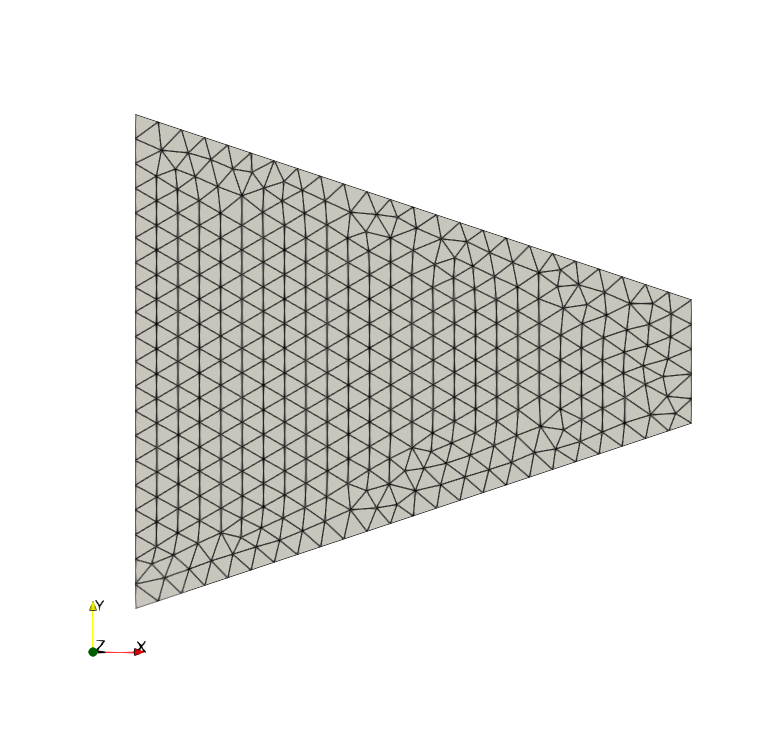 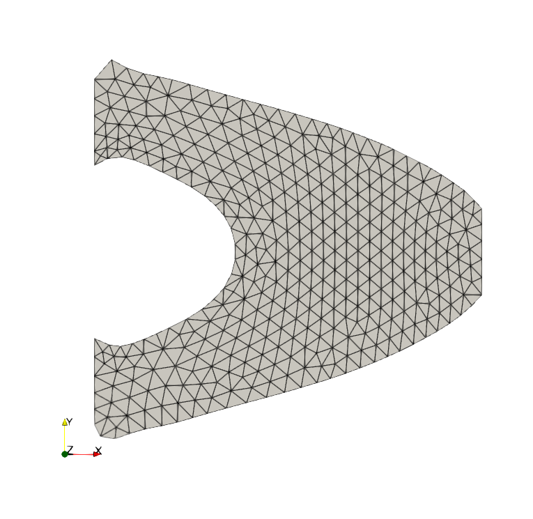 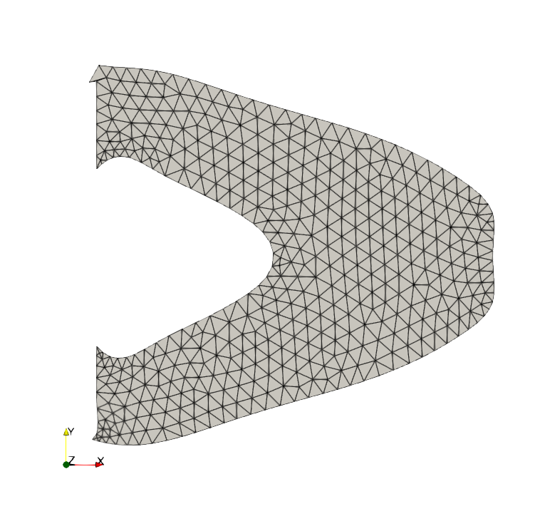 |
One hole :
The second test consists of studying the cantilever with a single hole. The results obtained are presented in Figures below. We use a discretization parameter of \(h=0.4\). For the Lagrange multiplier, we initialize with \(l=0.5\), and set \(a=b=0.5\) and \(c=10\) with a descent step of \(t=0.2\).
\(J(\Omega_0)\) |
\(J(\Omega_{n_{final}})\) |
\(||\Omega_0|-|\Omega_{n_{final}}||\) |
\(||\theta_{n_{final}}||_{H^1}\) |
\(n_{final}\) |
\(4.7035\) |
\(3.2162\) |
\(2.9980e-3\) |
\(1.8906e-2\) |
\(125\) |
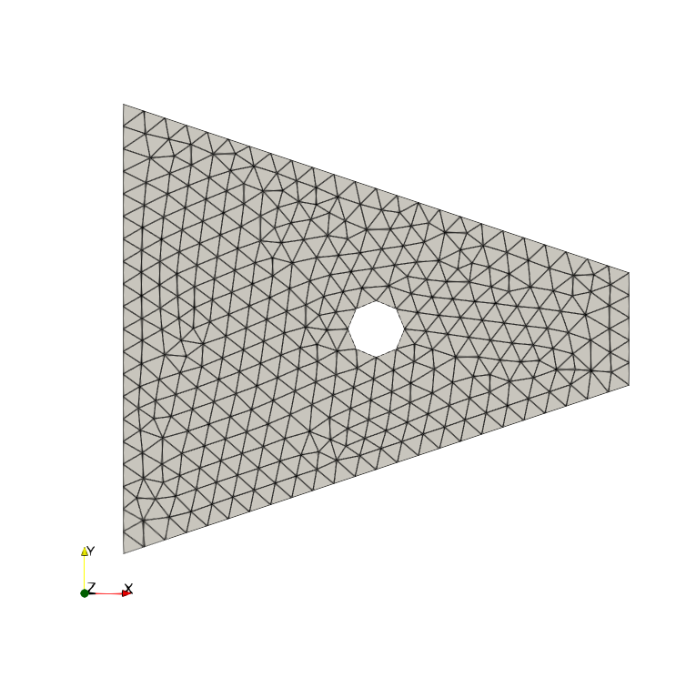 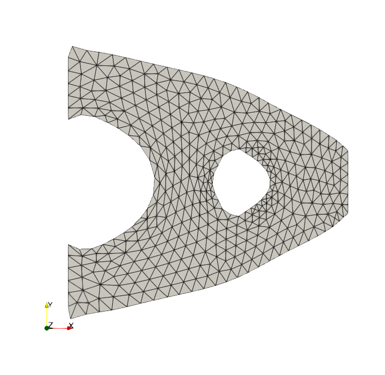 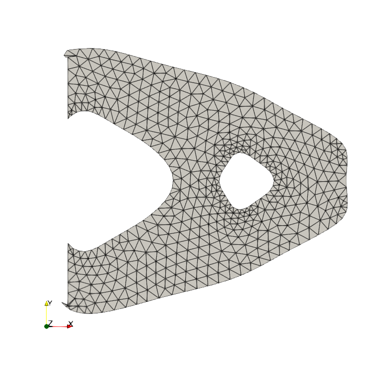 |
Four holes :
The last type of cantilever studied is one with four holes in its domain. The results are displayed in the figures below. We use a discretization parameter of \(h=0.4\). For the Lagrange multiplier, we initialize with \(l=0.5\), and set \(a=b=0.5\) and \(c=10\) with a descent step of \(t=0.2\).
\(J(\Omega_0)\) |
\(J(\Omega_{n_{final}})\) |
\(||\Omega_0|-|\Omega_{n_{final}}||\) |
\(||\theta_{n_{final}}||_{H^1}\) |
\(n_{final}\) |
\(5.1589\) |
\(3.3770\) |
\(2.5317e-3\) |
\(1.5615e-2\) |
\(125\) |
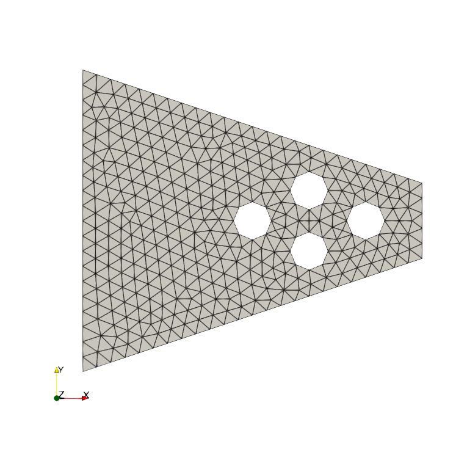 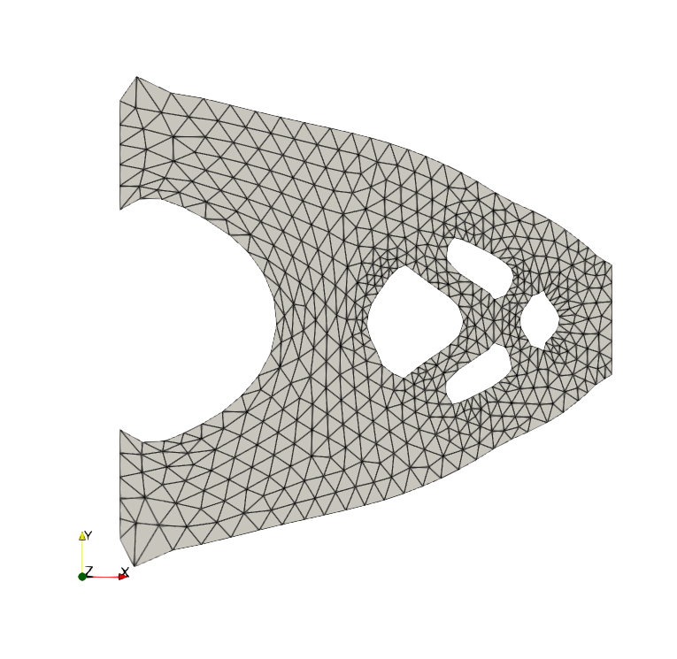 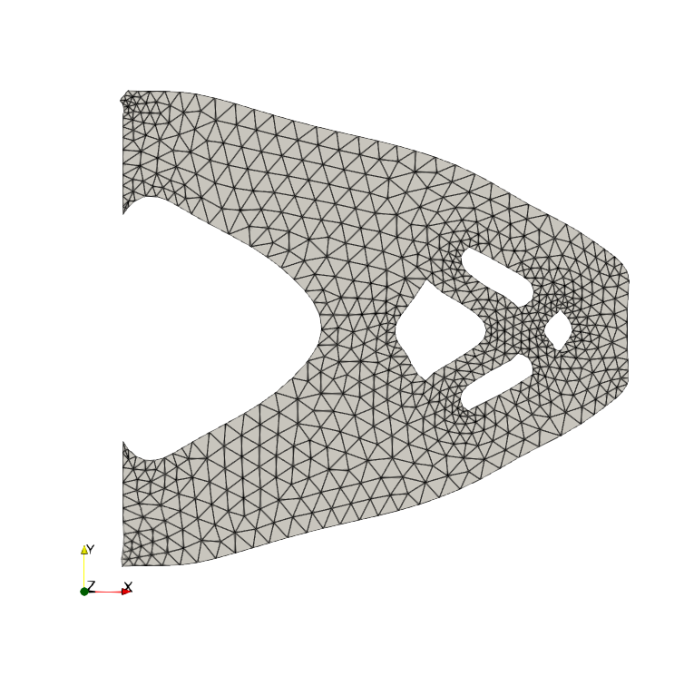 |
The results presented above demonstrate that satisfactory outcomes can be achieved using the proposed method. Notably, the obtained shapes closely resemble those reported in various papers that focus on optimizing the geometrical shape of cantilevers, such as [allaire_conception_2006]. Furthermore, we successfully decrease the cost function while approaching the initial volume of the domain, which aligns precisely with the desired behavior. It is worth noting that potential geometric instabilities, in the form of spikes, may emerge on \(\Gamma_D\) after a certain number of iterations. These spikes are also observed in the 3D case, as illustrated in the subsequent figures.
3.2. 3D simulations for various types of cantilever :
In this section, we address the case of the 3D cantilever, which introduces additional complexities compared to the 2D case and results in longer computation times. Incorporating holes into the structure also increases the risk of encountering mesh superposition issues. The overall geometry of the 3D cantilever remains similar to the 2D case, with the addition of four pillars, and boundary conditions are now applied to surfaces instead of curves. The specific parameter values used in the analysis are provided in detail in following table.
Symbol |
Value (dimensionless) |
\(\lambda\) |
\(50/9\) |
\(\mu\) |
\(350/27\) |
\(H\) |
\(9\) |
\(C_1\) |
\(8\) |
\(C_2\) |
\(2\) |
\(f\) |
\((0,-1,0)\) |
No hole :
Let’s first consider the case without a hole. We use a discretization parameter of \(h=0.8\). For the coefficients affecting the optimization problem, we set \(l=0.5\), \(a=b=0.5\), \(c=3\), and choose a descent step \(t\) of \(0.1\). The results of this test are presented in Figures below.
\(J(\Omega_0)\) |
\(J(\Omega_{n_{final}})\) |
\(||\Omega_0|-|\Omega_{n_{final}}||\) |
\(||\theta_{n_{final}}||_{H^1}\) |
\(n_{final}\) |
\(4.8060\) |
\(3.0484\) |
\(0.1439\) |
\(2.1647e-2\) |
\(400\) |
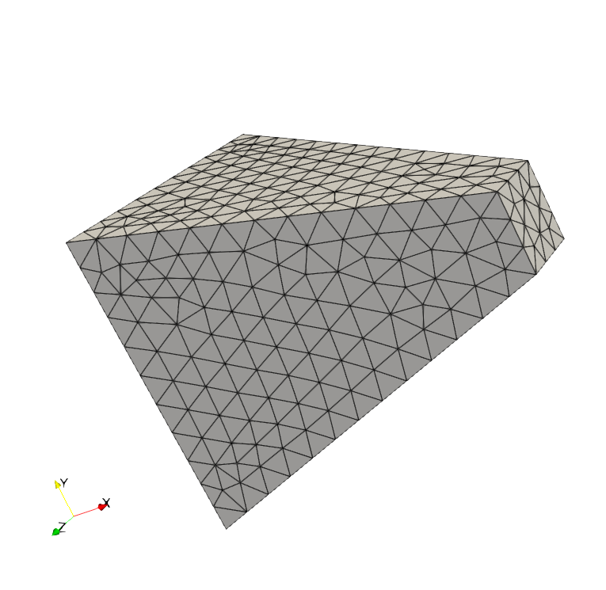 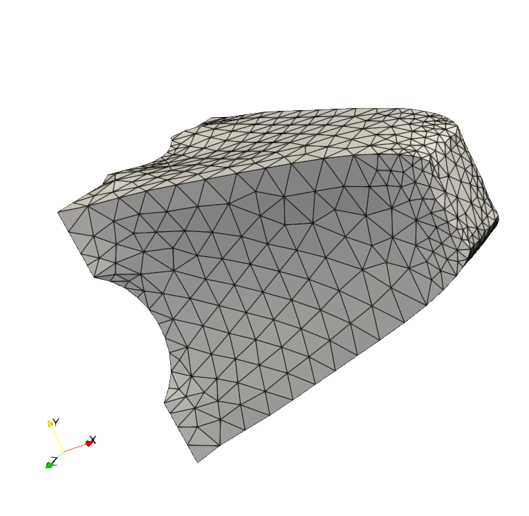 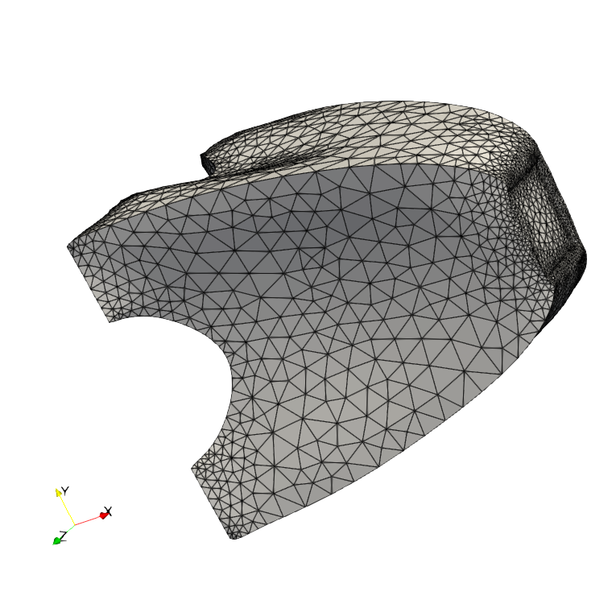 |
One hole :
In the next test, we add a hole inside the material. The results are presented in Figures below. We use a discretization parameter of \(h=0.8\). The other coefficients used are \(l=0.5\), \(a=b=0.5\), \(c=2\), and \(t=0.08\).
\(J(\Omega_0)\) |
\(J(\Omega_{n_{final}})\) |
\(||\Omega_0|-|\Omega_{n_{final}}||\) |
\(||\theta_{n_{final}}||_{H^1}\) |
\(n_{final}\) |
\(6.4813\) |
\(3.7726\) |
\(0.2582\) |
\(4.7253e-2\) |
\(250\) |
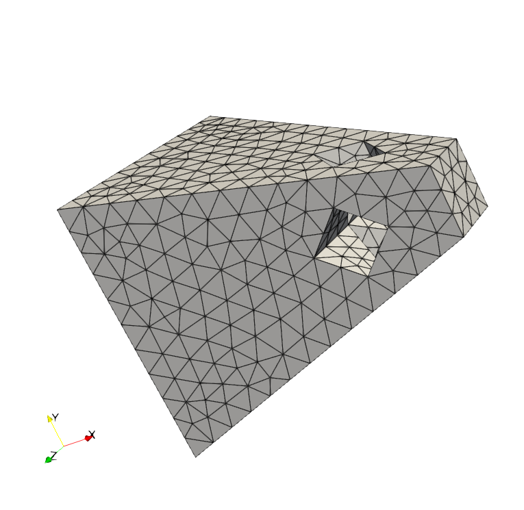 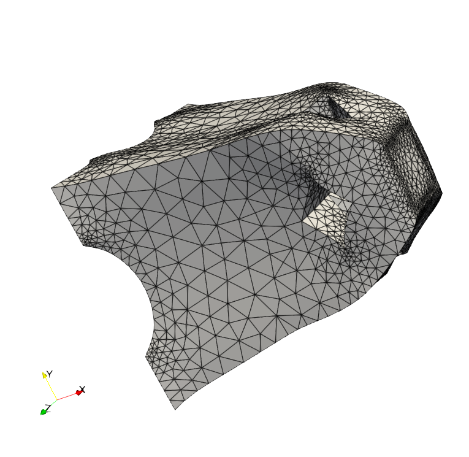 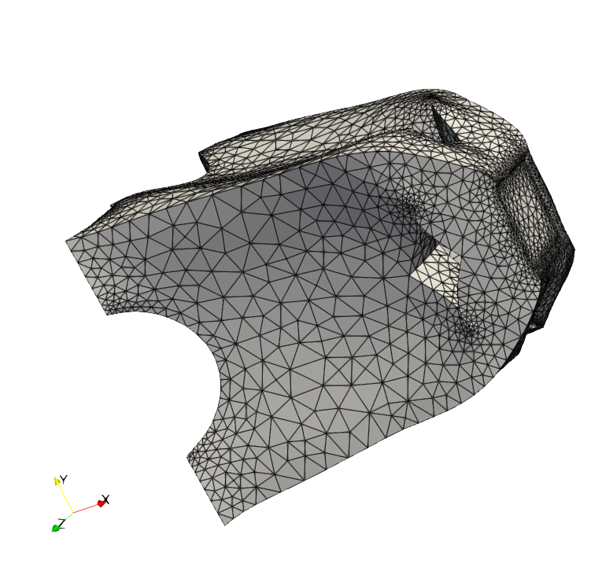 |
It is important to note that the chosen optimal shape in the simulations effectively reduces the cost function while maintaining the volume. However, due to limitations, we had to prematurely halt the simulations. If allowed to continue, the cost function would have been further minimized, resulting in a more optimal shape. Nonetheless, the obtained shape presents several issues. Specifically, certain areas such as the feet and top part exhibit more prominent outgrowths, which can be attributed to volume conservation. The shape optimization process tends to hollow out the cantilever below the desired volume (between the four legs). As a result, to compensate for this volume loss, protrusions seem to emerge after a certain number of iterations. Another significant issue encountered is mesh collision and overlap. Additionally, the discontinuities observed in the curves of the different simulations correspond to the remeshing that occurs during the iterations.
References on geometric shape optimisation
-
[internship_Palazzolo] Lucas Palazzolo. Shape optimization for rigid objects in Stokes flow. Stage de M2, Univerité de Strasbourg/Inria Sophia-Antipolis, 2023. repo
-
[allaire_conception_2006] Grégoire Allaire. Conception optimale de structures. volume 58 of Mathématiques & applications. Springer Berlin Heidelberg, 2006
-
[cea_conception_1986] Jean Céa. Conception optimale ou identification de formes, calcul rapide de la dérivée directionnelle de la fonction coût. M2AN - Modélisation mathématique et analyse numérique, 20(3):371-402, 1986
-
[moreau_shapes_2022] Clément Moreau, Kenta Ishimoto and Yannick Privat. Shapes optimising grand resistance tensor entries for a rigid body in a Stokes flow. July 2022
-
[feppon_shape_2019] Florian Feppon. Shape and topology optimization of multiphysics systems. These de doctorat, Université Paris-Saclay (ComUE), Dec. 2019